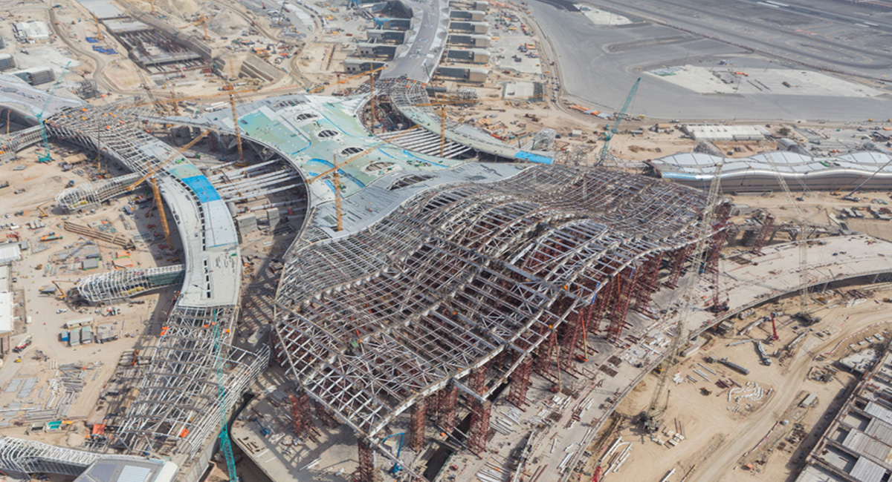
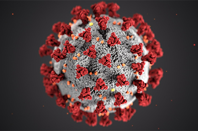

Het emiraat Abu Dhabi was samen met Bahrein, Qatar en het Sultanaat van Oman mede-eigenaar van Gulf Air en was gestationeerd op Abu Dhabi International Airport van de jaren zeventig tot september 2005 toen Abu Dhabi zich terugtrok uit de luchtvaartmaatschappij. waardoor het een luchtvaartmaatschappij was die eigendom was van Oman en Bahrein tot de terugtrekking van Oman in 2007 om zich te concentreren op Oman Air. In juli 2003 vaardigde de toekomstige president van de VAE, Sheikh Khalifa bin Zayed Al Nahyan, die een luchtvaartmaatschappij voor Abu Dhabi wilde, een Koninklijk Besluit (Amiri) uit dat Etihad Airways vestigde als de tweede nationale luchtvaartmaatschappij van de Verenigde Arabische Emiraten. Mede Al Nahyan-familielid Sheikh Ahmed bin Saif Al Nahyan richtte en begon met een initieel volgestort kapitaal van AED 500 miljoen. De diensten werden gelanceerd met een ceremoniële vlucht naar Al Ain op 5 november 2003. Op 12 november 2003 begon Etihad met commerciële activiteiten met de lancering van diensten naar Beiroet, Libanon. In juni 2004 plaatste de luchtvaartmaatschappij een vliegtuigbestelling van US $ 8 miljard voor vijf Boeing 777-300ER's en 24 Airbus-vliegtuigen, waaronder vier Airbus A380's. De eerste A380 werd afgeleverd in december 2014. De luchtvaartmaatschappij kondigde op de Farnborough Airshow in 2008 aan wat de grootste vliegtuigorder in de geschiedenis van de commerciële luchtvaart was, voor maximaal 205 vliegtuigen: 100 vaste orders, 55 opties en 50 kooprechten. Etihad rapporteerde in 2011 zijn eerste nettowinst voor het hele jaar van $ 14 miljoen, in lijn met het strategische plan dat in 2006 door CEO James Hogan werd aangekondigd. In december 2011 kondigde Etihad aan dat het een belang van 29,21% in Air Berlin had genomen Europa's zesde grootste luchtvaartmaatschappij, en James Hogan werd benoemd tot vice-voorzitter. Het volgde daarop met minderheidsbelangen in andere luchtvaartmaatschappijen: Air Seychelles (40%), Aer Lingus (2,987%), Virgin Australia (10%). Op 1 augustus 2013 tekende de president van het bedrijf, James Hogan, een deal met Aleksandar Vučić, eerste vicepremier van Servië, in Belgrado, waardoor Etihad een belang van 49% kreeg in de Servische nationale luchtvaartmaatschappij Jat Airways. De Servische regering behield 51% van de aandelen en het bedrijf werd omgedoopt tot Air Serbia. In september 2012 kondigde de Indiase regering aan dat buitenlandse luchtvaartmaatschappijen een belang van maximaal 49% in Indiase luchtvaartmaatschappijen zouden kunnen nemen. Op 24 april 2013 kondigde Jet Airways aan dat het klaar was om een belang van 24% in de luchtvaartmaatschappij te verkopen aan Etihad voor US $ 379 miljoen. De deal is op 12 november 2013 afgerond.

Op de Dubai Airshow in 2013 kondigde Etihad aan dat het een belang van 33,3% verwerft in de Zwitserse luchtvaartmaatschappij Darwin Airline. Darwin werd vanaf maart 2014 omgedoopt tot Etihad Regional. Etihad verkocht zijn belang in Darwin in 2017. Op 1 augustus 2014 stemde Etihad ermee in een belang van 49% te nemen in de Italiaanse nationale luchtvaartmaatschappij Alitalia voor naar schatting € 560 miljoen. De deal werd gesloten op 8 augustus 2014. Op 1 januari 2015 heeft Alitalia-CAI zijn activiteiten formeel overgedragen aan Alitalia-SAI, een nieuwe entiteit die voor 49% eigendom is van Etihad en voor 51% van de aandeelhouders van Alitalia-CAI. In mei 2016 werd de management-structuur herschikt, toen James Hogan CEO werd van het moederbedrijf van de luchtvaartmaatschappij, Etihad Aviation Group. Peter Baumgartner, voorheen Chief Commercial Officer van de luchtvaartmaatschappij, werd Chief Executive Officer van de luchtvaartmaatschappij en rapporteerde aan Hogan. In mei 2017, een week nadat Alitalia in administratie was gevallen, kondigde Etihad Aviation Group plotseling aan dat CEO James Hogan en CFO James Rigney de groep op 1 juli 2017 zouden verlaten. Als tussentijdse maatregel benoemde de raad van bestuur Ray Gammell tot CEO (voorheen Chief People and Performance Officer) terwijl ze op zoek waren naar een permanente vervanging. Op 9 januari 2018 heeft Etihad Airways Mark Powers aangesteld als Group CFO, ter vervanging van interim Group CFO Ricky Thirion. Op 2 juli 2017 heeft het Amerikaanse ministerie van Binnenlandse Veiligheid Etihad Airways verboden en Etihad Airways vrijgesteld van het elektronicabod van 2017 nadat de luchtvaartmaatschappij haar passagierscontroleprocessen had verbeterd. In februari 2019 kondigde Etihad grote annuleringen van bestellingen aan voor zowel Airbus- als Boeing-vliegtuigen. De luchtvaartmaatschappij beëindigde contracten voor alle 42 Airbus A350-900's, 2 A350-1000's en 19 van de 24 bestelde Boeing 777X.

In mei 2020, kort nadat Air France zijn volledige Airbus A380-vloot had stopgezet vanwege de COVID-19-pandemie, waren er geruchten dat Etihad Airways overwoog om al zijn resterende Airbus A350-bestellingen te annuleren en zijn volledige Airbus A380-vloot stop te zetten vanwege meer financiële verliezen. door de COVID-19-pandemie. Etihad is van plan om zeer binnenkort een definitieve beslissing te nemen. Als Etihad een definitief besluit bevestigt om alle Airbus A380's definitief te verwijderen, wordt het de tweede Airbus A380-operator die zijn Airbus A380-vloot met pensioen gaat, aangezien Air France-KLM de eerste Airbus A380-operator is die zijn Airbus A380-vloot met pensioen gaat. Echter, op 26 mei 2020 bevestigde Etihad dat de luchtvaartmaatschappij de resterende Airbus A350-bestellingen niet zal annuleren en van plan is door te gaan. De luchtvaartmaatschappij bevestigde ook dat het geen plannen heeft om zijn Airbus A380-vloot vervroegd met pensioen te laten gaan, in tegenstelling tot Air France, ondanks de COVID-19-pandemie. Vanaf oktober 2020 verklaarden sommige bronnen echter dat de Etihad Airbus A380 nog steeds een mogelijke mogelijkheid van vervroegd pensioen heeft vanwege de veranderingen in de vliegtuigmarkt en de vraag veroorzaakt door de COVID-19-pandemie, zoals Tony Douglas, CEO van Etihad Airways, verwees naar de Airbus A380. heeft een zwaar inefficiënte gehandicapte kolos door twee motoren te veel. Tony Douglas zei ook dat kleinere langeafstandsvliegtuigen met twee vliegtuigen, zoals de Boeing 777X, 787 en Airbus A350, het werk veel efficiënter en duurzamer kunnen doen dan dat van de A380.